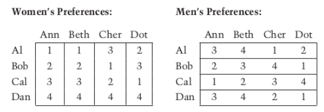
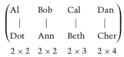
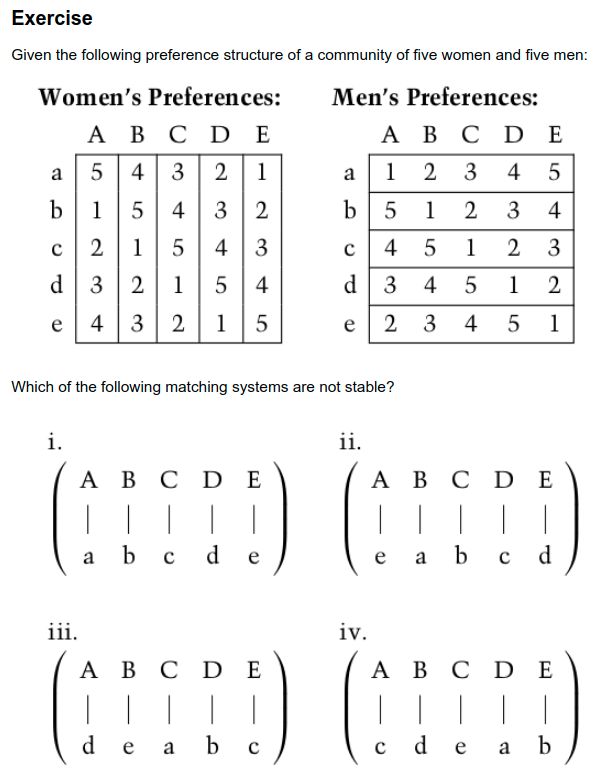

Gale-Shapley Algorithm Implementation
Contents
Gale-Shapley Algorithm Implementation¶
FIZ371 - Scientific & Technical Computations | 26/04/2021
Dr. Emre S. Tasci mailto:emre.tasci@hacettepe.edu.tr
import numpy as np
import copy
def names2ids2names(names_men,names_women):
name2id = {}
id2man = {}
id2woman = {}
for i,name in enumerate(names_men):
name2id[name] = i
id2man[i] = name
for i,name in enumerate(names_women):
name2id[name] = i
id2woman[i] = name
return name2id,id2man,id2woman
def visualizer(prop,pref_top,pref_bottom,name2id):
# "Visualizer"
vis_top = []
vis_mid = []
vis_bottom = []
vis_pref = []
for i,match in enumerate(prop):
top,bottom = match
vis_top.append("{:^9}".format(top))
vis_mid.append("{:^9}".format("|"))
vis_bottom.append("{:^9}".format(bottom))
vis_pref.append("{:^9}".format("{:}x{:}".format(pref_top[name2id[top],name2id[bottom]],
pref_bottom[name2id[bottom]][name2id[top]])))
visualize = "{:}".format("".join(vis_top)+"\n"+"".join(vis_mid)+\
"\n"+"".join(vis_bottom)+"\n"+\
"".join(vis_pref))
return visualize
def find_stable(pref,names,proposed_by="m",men=1,verbose=True,top="x"):
output = []
if(men==1):
pref_women = pref[0]
pref_men = pref[1]
names_women = names[0]
names_men = names[1]
else:
pref_women = pref[1]
pref_men = pref[0]
names_women = names[1]
names_men = names[0]
name2id,id2man,id2woman = names2ids2names(names_men,names_women)
if(proposed_by == "m"):
pref_wooer = pref_men
pref_wooed = pref_women
names_wooer = names_men
names_wooed = names_women
id2wooer = id2man
id2wooed = id2woman
else:
pref_wooed = pref_men
pref_wooer = pref_women
names_wooed = names_men
names_wooer = names_women
id2wooer = id2woman
id2wooed = id2man
num_people = len(id2man)
wooer_curr_counter = np.zeros(num_people,int)
pref2ids = []
for wooer_id in range(num_people):
aux_arr = np.zeros(num_people,int)
for i,pref in enumerate(pref_wooer[wooer_id]):
aux_arr[pref-1] = i
pref2ids.append(aux_arr)
#print(pref2ids)
zero_to_num = np.arange(num_people)
flag_continue = True
while(flag_continue):
# Assign wooed's bins
bin_wooed = []
for i in range(num_people):
bin_wooed.append([])
flag_continue = False
for wooer_id in zero_to_num:
wooer_name = id2wooer[wooer_id]
wooer_pref_arr = pref2ids[wooer_id]
wooer_curr_pref_wooed_id = pref2ids[wooer_id][wooer_curr_counter[wooer_id]]
wooer_curr_pref_wooed_name = id2wooed[wooer_curr_pref_wooed_id]
output.append("{:3}({:})'s {:}. preference: {:4}({:})"\
.format(id2wooer[wooer_id],wooer_id,wooer_curr_counter[wooer_id]+1,
wooer_curr_pref_wooed_name,wooer_curr_pref_wooed_id))
bin_wooed[wooer_curr_pref_wooed_id].append(wooer_id)
output.append(str(bin_wooed))
for wooed_id in zero_to_num:
candidates = np.array(bin_wooed[wooed_id])
if(len(candidates)>1):
flag_continue = True
#print(candidates)
pref_candidates = pref_wooed[wooed_id][candidates]
#print(pref_candidates)
w = pref_candidates.argmin()
#print(w)
rejected = candidates[pref_candidates != pref_candidates[w]]
#print(rejected)
for i in rejected:
wooer_curr_counter[i] +=1
bin_wooed[wooed_id].remove(i)
#print(men_curr_counter)
output.append("\n"+"-"*45+"\n")
output.append(str(bin_wooed))
aux_dic = {}
for i,wooed_id in enumerate(bin_wooed):
aux_dic[id2wooer[i]] = id2wooed[wooed_id[0]]
aux_dic[id2wooed[wooed_id[0]]] = id2wooer[i]
m_names = []
w_names = []
if(proposed_by == "m"):
# wooer : m, wooed : w
for i,wooed_id in enumerate(bin_wooed):
m_names.append(id2wooer[i])
w_names.append(id2wooed[wooed_id[0]])
elif(proposed_by == "w"):
# wooer : w, wooed : m
for i,wooed_id in enumerate(bin_wooed):
w_names.append(id2wooer[i])
m_names.append(id2wooed[wooed_id[0]])
# Decide which species to be put on top
if(top == "x"):
# No preference, so put the wooed
if(proposed_by == "m"):
names_top = w_names
names_bottom = m_names
pref_top = pref_women
pref_bottom = pref_men
return_names_top = names_women
return_names_bottom = names_men
else:
names_top = m_names
names_bottom = w_names
pref_top = pref_men
pref_bottom = pref_women
return_names_top = names_men
return_names_bottom = names_women
elif(top == "m"):
names_top = m_names
names_bottom = w_names
pref_top = pref_men
pref_bottom = pref_women
return_names_top = names_men
return_names_bottom = names_women
else:
names_top = w_names
names_bottom = m_names
pref_top = pref_women
pref_bottom = pref_men
return_names_top = names_women
return_names_bottom = names_men
ret_prop =[]
for topn,botn in zip(names_top,names_bottom):
ret_prop.append([topn,botn])
output.append(str(ret_prop))
vis = visualizer(ret_prop,pref_top,pref_bottom,name2id)
print(vis)
if(verbose):
print("\n*Details:*\n\n"+"\n".join(output))
# We are also returning additional properties so
# if needed can be fed into check_stability
return (ret_prop,[pref_top,pref_bottom],\
[return_names_top,return_names_bottom])
def check_stability(res,verbose=True):
output = []
unstables = []
prop = res[0]
#print(prop)
pref_top = res[1][0]
pref_bottom = res[1][1]
names_top = res[2][0]
names_bottom = res[2][1]
num_people = len(pref_top)
zero_to_num = np.arange(num_people)
name2id = {}
id2top = []
id2bottom = []
for i, (name_t,name_b) in enumerate(zip(names_top,names_bottom)):
#print(i,name_t,name_b)
name2id[name_t] = i
name2id[name_b] = i
id2top.append(name_t)
id2bottom.append(name_b)
vis = visualizer(prop,pref_top,pref_bottom,name2id)
print(vis)
print("")
# Convert the given proposition to ids and prefs
ids = []
pref = []
dic_match = {}
for row in prop:
n_t,n_b = row
dic_match[n_t] = n_b
dic_match[n_b] = n_t
id_t = name2id[n_t]
id_b = name2id[n_b]
ids.append([name2id[n_t],name2id[n_b]])
pref.append([pref_top[id_t][id_b],pref_bottom[id_b][id_t]])
#print(ids)
#print(pref)
out_top = []
out_bot = []
for i,(ids_tb,pref_tb) in enumerate(zip(ids,pref)):
id_t, id_b = ids_tb
pref_t,pref_b = pref_tb
out_top.append("* {:} is currently matched with {:} - their {:}. choice".\
format(names_top[id_t],names_bottom[id_b],pref_t))
out_bot.append("* {:} is currently matched with {:} - their {:}. choice".\
format(names_bottom[id_b],names_top[id_t],pref_b))
if(pref_t == 1):
out_top.append(" {:} can't do any better because they already got their top choice!".format(names_top[id_t]))
else:
out_top.append(" Let's see if they can persuade a higher preferred candidate.")
prefs_this_t = np.array(pref_top[id_t])
for p in range(1,pref_t):
nth_b_id = zero_to_num[prefs_this_t == p][0]
nth_b_name = names_bottom[nth_b_id]
out_top.append(" - Their {:}. choice is {:}:".\
format(p,nth_b_name))
nth_b_match_t_name = dic_match[nth_b_name]
nth_b_match_t_id = name2id[nth_b_match_t_name]
nth_b_match_t_pref = pref_bottom[nth_b_id][nth_b_match_t_id]
out_top.append(" {:} is currently matched with {:}, their {:}. choice.".\
format(nth_b_name,nth_b_match_t_name,nth_b_match_t_pref))
nth_b_this_t_pref = pref_bottom[nth_b_id][id_t]
str_aux = " Since {:} is {:}'s {:}. choice and ".\
format(names_top[id_t],nth_b_name,nth_b_this_t_pref)
if(nth_b_this_t_pref<nth_b_match_t_pref):
str_aux += "{:}<{:}\n --> {:} will reject their current match - Unstable!".\
format(nth_b_this_t_pref,nth_b_match_t_pref,nth_b_name)
unstables.append("{:}: x {:} -> {:}".format(names_top[id_t],names_bottom[id_b],nth_b_name))
else:
str_aux += "{:}>{:}\n --> {:} is satisfied with their current match.".\
format(nth_b_this_t_pref,nth_b_match_t_pref,nth_b_name)
out_top.append(str_aux)
out_top.append("")
out_top.append("-"*45+"\n")
if(pref_b == 1):
out_bot.append(" {:} can't do any better because they already got their top choice!".format(names_bottom[id_b]))
else:
out_bot.append(" Let's see if they can persuade a higher preferred candidate.")
prefs_this_b = np.array(pref_bottom[id_b])
for p in range(1,pref_b):
nth_t_id = zero_to_num[prefs_this_b == p][0]
nth_t_name = names_top[nth_t_id]
out_bot.append(" - Their {:}. choice is {:}:".\
format(p,nth_t_name))
nth_t_match_b_name = dic_match[nth_t_name]
nth_t_match_b_id = name2id[nth_t_match_b_name]
nth_t_match_b_pref = pref_top[nth_t_id][nth_t_match_b_id]
out_bot.append(" {:} is currently matched with {:}, their {:}. choice.".\
format(nth_t_name,nth_t_match_b_name,nth_t_match_b_pref))
nth_t_this_b_pref = pref_top[nth_t_id][id_b]
str_aux = " Since {:} is {:}'s {:}. choice and ".\
format(names_bottom[id_b],nth_t_name,nth_t_this_b_pref)
if(nth_t_this_b_pref<nth_t_match_b_pref):
str_aux += "{:}<{:}\n --> {:} will reject their current match - Unstable!".\
format(nth_t_this_b_pref,nth_t_match_b_pref,nth_t_name)
unstables.append("{:}: x {:} -> {:}".format(names_bottom[id_b],names_top[id_t],nth_t_name))
else:
str_aux += "{:}>{:}\n --> {:} is satisfied with their current match.".\
format(nth_t_this_b_pref,nth_t_match_b_pref,nth_t_name)
out_bot.append(str_aux)
out_bot.append("")
out_bot.append("-"*45+"\n")
if(verbose):
print("\n".join(out_top))
print("\n".join(out_bot))
if(len(unstables)):
print("\nThis proposal is unstable due to:\n * ",end="")
print("\n * ".join(unstables))
else:
print("\nThis proposal is stable.")
Case 1¶

pref_0 = np.array([[1,1,3,2],[2,2,1,3],[3,3,2,1],[4,4,4,4]]).T
pref_1 = np.array([[3,4,1,2],[2,3,4,1],[1,2,3,4],[3,4,2,1]])
pref = [pref_0, pref_1]
names_0 = np.array(["Ann","Beth","Cher","Dot"])
names_1 = np.array(["Al","Bob","Cal","Dan"])
names = [names_0, names_1]
1.1 Find a stable proposition:¶
Women proposed by men:¶
prop_1_1_pw = find_stable(pref,names,proposed_by="m",
verbose=True,top="w")
Cher Dot Ann Beth
| | | |
Al Bob Cal Dan
3x1 3x1 3x1 4x4
*Details:*
Al (0)'s 1. preference: Cher(2)
Bob(1)'s 1. preference: Dot (3)
Cal(2)'s 1. preference: Ann (0)
Dan(3)'s 1. preference: Dot (3)
[[2], [], [0], [1, 3]]
---------------------------------------------
Al (0)'s 1. preference: Cher(2)
Bob(1)'s 1. preference: Dot (3)
Cal(2)'s 1. preference: Ann (0)
Dan(3)'s 2. preference: Cher(2)
[[2], [], [0, 3], [1]]
---------------------------------------------
Al (0)'s 1. preference: Cher(2)
Bob(1)'s 1. preference: Dot (3)
Cal(2)'s 1. preference: Ann (0)
Dan(3)'s 3. preference: Ann (0)
[[2, 3], [], [0], [1]]
---------------------------------------------
Al (0)'s 1. preference: Cher(2)
Bob(1)'s 1. preference: Dot (3)
Cal(2)'s 1. preference: Ann (0)
Dan(3)'s 4. preference: Beth(1)
[[2], [3], [0], [1]]
---------------------------------------------
[[2], [3], [0], [1]]
[['Cher', 'Al'], ['Dot', 'Bob'], ['Ann', 'Cal'], ['Beth', 'Dan']]
Check the stability
check_stability(prop_1_1_pw)
Cher Dot Ann Beth
| | | |
Al Bob Cal Dan
3x1 3x1 3x1 4x4
* Cher is currently matched with Al - their 3. choice
Let's see if they can persuade a higher preferred candidate.
- Their 1. choice is Bob:
Bob is currently matched with Dot, their 1. choice.
Since Cher is Bob's 4. choice and 4>1
--> Bob is satisfied with their current match.
- Their 2. choice is Cal:
Cal is currently matched with Ann, their 1. choice.
Since Cher is Cal's 3. choice and 3>1
--> Cal is satisfied with their current match.
---------------------------------------------
* Dot is currently matched with Bob - their 3. choice
Let's see if they can persuade a higher preferred candidate.
- Their 1. choice is Cal:
Cal is currently matched with Ann, their 1. choice.
Since Dot is Cal's 4. choice and 4>1
--> Cal is satisfied with their current match.
- Their 2. choice is Al:
Al is currently matched with Cher, their 1. choice.
Since Dot is Al's 2. choice and 2>1
--> Al is satisfied with their current match.
---------------------------------------------
* Ann is currently matched with Cal - their 3. choice
Let's see if they can persuade a higher preferred candidate.
- Their 1. choice is Al:
Al is currently matched with Cher, their 1. choice.
Since Ann is Al's 3. choice and 3>1
--> Al is satisfied with their current match.
- Their 2. choice is Bob:
Bob is currently matched with Dot, their 1. choice.
Since Ann is Bob's 2. choice and 2>1
--> Bob is satisfied with their current match.
---------------------------------------------
* Beth is currently matched with Dan - their 4. choice
Let's see if they can persuade a higher preferred candidate.
- Their 1. choice is Al:
Al is currently matched with Cher, their 1. choice.
Since Beth is Al's 4. choice and 4>1
--> Al is satisfied with their current match.
- Their 2. choice is Bob:
Bob is currently matched with Dot, their 1. choice.
Since Beth is Bob's 3. choice and 3>1
--> Bob is satisfied with their current match.
- Their 3. choice is Cal:
Cal is currently matched with Ann, their 1. choice.
Since Beth is Cal's 2. choice and 2>1
--> Cal is satisfied with their current match.
---------------------------------------------
* Al is currently matched with Cher - their 1. choice
Al can't do any better because they already got their top choice!
---------------------------------------------
* Bob is currently matched with Dot - their 1. choice
Bob can't do any better because they already got their top choice!
---------------------------------------------
* Cal is currently matched with Ann - their 1. choice
Cal can't do any better because they already got their top choice!
---------------------------------------------
* Dan is currently matched with Beth - their 4. choice
Let's see if they can persuade a higher preferred candidate.
- Their 1. choice is Dot:
Dot is currently matched with Bob, their 3. choice.
Since Dan is Dot's 4. choice and 4>3
--> Dot is satisfied with their current match.
- Their 2. choice is Cher:
Cher is currently matched with Al, their 3. choice.
Since Dan is Cher's 4. choice and 4>3
--> Cher is satisfied with their current match.
- Their 3. choice is Ann:
Ann is currently matched with Cal, their 3. choice.
Since Dan is Ann's 4. choice and 4>3
--> Ann is satisfied with their current match.
---------------------------------------------
This proposal is stable.
Men proposed by women:¶
prop_1_1_pw = find_stable(pref,names,proposed_by="w",
verbose=True)
Cal Dan Al Bob
| | | |
Ann Beth Cher Dot
1x3 4x4 1x3 1x3
*Details:*
Ann(0)'s 1. preference: Al (0)
Beth(1)'s 1. preference: Al (0)
Cher(2)'s 1. preference: Bob (1)
Dot(3)'s 1. preference: Cal (2)
[[0, 1], [2], [3], []]
---------------------------------------------
Ann(0)'s 1. preference: Al (0)
Beth(1)'s 2. preference: Bob (1)
Cher(2)'s 1. preference: Bob (1)
Dot(3)'s 1. preference: Cal (2)
[[0], [1, 2], [3], []]
---------------------------------------------
Ann(0)'s 1. preference: Al (0)
Beth(1)'s 2. preference: Bob (1)
Cher(2)'s 2. preference: Cal (2)
Dot(3)'s 1. preference: Cal (2)
[[0], [1], [2, 3], []]
---------------------------------------------
Ann(0)'s 1. preference: Al (0)
Beth(1)'s 2. preference: Bob (1)
Cher(2)'s 2. preference: Cal (2)
Dot(3)'s 2. preference: Al (0)
[[0, 3], [1], [2], []]
---------------------------------------------
Ann(0)'s 2. preference: Bob (1)
Beth(1)'s 2. preference: Bob (1)
Cher(2)'s 2. preference: Cal (2)
Dot(3)'s 2. preference: Al (0)
[[3], [0, 1], [2], []]
---------------------------------------------
Ann(0)'s 2. preference: Bob (1)
Beth(1)'s 3. preference: Cal (2)
Cher(2)'s 2. preference: Cal (2)
Dot(3)'s 2. preference: Al (0)
[[3], [0], [1, 2], []]
---------------------------------------------
Ann(0)'s 2. preference: Bob (1)
Beth(1)'s 3. preference: Cal (2)
Cher(2)'s 3. preference: Al (0)
Dot(3)'s 2. preference: Al (0)
[[2, 3], [0], [1], []]
---------------------------------------------
Ann(0)'s 2. preference: Bob (1)
Beth(1)'s 3. preference: Cal (2)
Cher(2)'s 3. preference: Al (0)
Dot(3)'s 3. preference: Bob (1)
[[2], [0, 3], [1], []]
---------------------------------------------
Ann(0)'s 3. preference: Cal (2)
Beth(1)'s 3. preference: Cal (2)
Cher(2)'s 3. preference: Al (0)
Dot(3)'s 3. preference: Bob (1)
[[2], [3], [0, 1], []]
---------------------------------------------
Ann(0)'s 3. preference: Cal (2)
Beth(1)'s 4. preference: Dan (3)
Cher(2)'s 3. preference: Al (0)
Dot(3)'s 3. preference: Bob (1)
[[2], [3], [0], [1]]
---------------------------------------------
[[2], [3], [0], [1]]
[['Cal', 'Ann'], ['Dan', 'Beth'], ['Al', 'Cher'], ['Bob', 'Dot']]
So we see that both sides’ proposals yield the same matching. Hence this is a unique match.
For breve output & easier comparison:
prop_1_1_pw = find_stable(pref,names,proposed_by="w",
verbose=False,top="w")
Ann Beth Cher Dot
| | | |
Cal Dan Al Bob
3x1 4x4 3x1 3x1
prop_1_1_pm = find_stable(pref,names,proposed_by="m",
verbose=False)
Cher Dot Ann Beth
| | | |
Al Bob Cal Dan
3x1 3x1 3x1 4x4
1.2 Evaluate different matches (straight from the book)¶

prop_gura_1 = [["Al","Dot"],["Bob","Ann"],["Cal","Beth"],["Dan","Cher"]]
prop_gura_1_input=(prop_gura_1,[pref_1,pref_0],[names_1,names_0])
check_stability(prop_gura_1_input,verbose=True)
Al Bob Cal Dan
| | | |
Dot Ann Beth Cher
2x2 2x2 2x3 2x4
* Al is currently matched with Dot - their 2. choice
Let's see if they can persuade a higher preferred candidate.
- Their 1. choice is Cher:
Cher is currently matched with Dan, their 4. choice.
Since Al is Cher's 3. choice and 3<4
--> Cher will reject their current match - Unstable!
---------------------------------------------
* Bob is currently matched with Ann - their 2. choice
Let's see if they can persuade a higher preferred candidate.
- Their 1. choice is Dot:
Dot is currently matched with Al, their 2. choice.
Since Bob is Dot's 3. choice and 3>2
--> Dot is satisfied with their current match.
---------------------------------------------
* Cal is currently matched with Beth - their 2. choice
Let's see if they can persuade a higher preferred candidate.
- Their 1. choice is Ann:
Ann is currently matched with Bob, their 2. choice.
Since Cal is Ann's 3. choice and 3>2
--> Ann is satisfied with their current match.
---------------------------------------------
* Dan is currently matched with Cher - their 2. choice
Let's see if they can persuade a higher preferred candidate.
- Their 1. choice is Dot:
Dot is currently matched with Al, their 2. choice.
Since Dan is Dot's 4. choice and 4>2
--> Dot is satisfied with their current match.
---------------------------------------------
* Dot is currently matched with Al - their 2. choice
Let's see if they can persuade a higher preferred candidate.
- Their 1. choice is Cal:
Cal is currently matched with Beth, their 2. choice.
Since Dot is Cal's 4. choice and 4>2
--> Cal is satisfied with their current match.
---------------------------------------------
* Ann is currently matched with Bob - their 2. choice
Let's see if they can persuade a higher preferred candidate.
- Their 1. choice is Al:
Al is currently matched with Dot, their 2. choice.
Since Ann is Al's 3. choice and 3>2
--> Al is satisfied with their current match.
---------------------------------------------
* Beth is currently matched with Cal - their 3. choice
Let's see if they can persuade a higher preferred candidate.
- Their 1. choice is Al:
Al is currently matched with Dot, their 2. choice.
Since Beth is Al's 4. choice and 4>2
--> Al is satisfied with their current match.
- Their 2. choice is Bob:
Bob is currently matched with Ann, their 2. choice.
Since Beth is Bob's 3. choice and 3>2
--> Bob is satisfied with their current match.
---------------------------------------------
* Cher is currently matched with Dan - their 4. choice
Let's see if they can persuade a higher preferred candidate.
- Their 1. choice is Bob:
Bob is currently matched with Ann, their 2. choice.
Since Cher is Bob's 4. choice and 4>2
--> Bob is satisfied with their current match.
- Their 2. choice is Cal:
Cal is currently matched with Beth, their 2. choice.
Since Cher is Cal's 3. choice and 3>2
--> Cal is satisfied with their current match.
- Their 3. choice is Al:
Al is currently matched with Dot, their 2. choice.
Since Cher is Al's 1. choice and 1<2
--> Al will reject their current match - Unstable!
---------------------------------------------
This proposal is unstable due to:
* Al: x Dot -> Cher
* Cher: x Dan -> Al
Men’s first choices¶
prop_gura_2 = [["Al","Cher"],["Bob","Dot"],["Cal","Ann"],["Dan","Beth"]]
prop_gura_2_input=(prop_gura_2,[pref_1,pref_0],[names_1,names_0])
check_stability(prop_gura_2_input,verbose=False)
Al Bob Cal Dan
| | | |
Cher Dot Ann Beth
1x3 1x3 1x3 4x4
This proposal is stable.
This is also the same one we derived via men/women proposing. It was unique, so this is the only stable proposal.
Case 2 (from the book)¶

pref_0 = np.array([[5,4,3,2,1],[1,5,4,3,2],[2,1,5,4,3],[3,2,1,5,4],[4,3,2,1,5]]).T
pref_1 = np.array([[1,2,3,4,5],[5,1,2,3,4],[4,5,1,2,3],[3,4,5,1,2],[2,3,4,5,1]])
pref = [pref_0, pref_1]
names_0 = np.array(["A","B","C","D","E"])
names_1 = np.array(["a","b","c","d","e"])
names = [names_0, names_1]
prop1 = [["A","a"],["B","b"],["C","c"],["D","d"],["E","e"]]
prop1_input = (prop1,pref,names)
check_stability(prop1_input)
A B C D E
| | | | |
a b c d e
5x1 5x1 5x1 5x1 5x1
* A is currently matched with a - their 5. choice
Let's see if they can persuade a higher preferred candidate.
- Their 1. choice is b:
b is currently matched with B, their 1. choice.
Since A is b's 5. choice and 5>1
--> b is satisfied with their current match.
- Their 2. choice is c:
c is currently matched with C, their 1. choice.
Since A is c's 4. choice and 4>1
--> c is satisfied with their current match.
- Their 3. choice is d:
d is currently matched with D, their 1. choice.
Since A is d's 3. choice and 3>1
--> d is satisfied with their current match.
- Their 4. choice is e:
e is currently matched with E, their 1. choice.
Since A is e's 2. choice and 2>1
--> e is satisfied with their current match.
---------------------------------------------
* B is currently matched with b - their 5. choice
Let's see if they can persuade a higher preferred candidate.
- Their 1. choice is c:
c is currently matched with C, their 1. choice.
Since B is c's 5. choice and 5>1
--> c is satisfied with their current match.
- Their 2. choice is d:
d is currently matched with D, their 1. choice.
Since B is d's 4. choice and 4>1
--> d is satisfied with their current match.
- Their 3. choice is e:
e is currently matched with E, their 1. choice.
Since B is e's 3. choice and 3>1
--> e is satisfied with their current match.
- Their 4. choice is a:
a is currently matched with A, their 1. choice.
Since B is a's 2. choice and 2>1
--> a is satisfied with their current match.
---------------------------------------------
* C is currently matched with c - their 5. choice
Let's see if they can persuade a higher preferred candidate.
- Their 1. choice is d:
d is currently matched with D, their 1. choice.
Since C is d's 5. choice and 5>1
--> d is satisfied with their current match.
- Their 2. choice is e:
e is currently matched with E, their 1. choice.
Since C is e's 4. choice and 4>1
--> e is satisfied with their current match.
- Their 3. choice is a:
a is currently matched with A, their 1. choice.
Since C is a's 3. choice and 3>1
--> a is satisfied with their current match.
- Their 4. choice is b:
b is currently matched with B, their 1. choice.
Since C is b's 2. choice and 2>1
--> b is satisfied with their current match.
---------------------------------------------
* D is currently matched with d - their 5. choice
Let's see if they can persuade a higher preferred candidate.
- Their 1. choice is e:
e is currently matched with E, their 1. choice.
Since D is e's 5. choice and 5>1
--> e is satisfied with their current match.
- Their 2. choice is a:
a is currently matched with A, their 1. choice.
Since D is a's 4. choice and 4>1
--> a is satisfied with their current match.
- Their 3. choice is b:
b is currently matched with B, their 1. choice.
Since D is b's 3. choice and 3>1
--> b is satisfied with their current match.
- Their 4. choice is c:
c is currently matched with C, their 1. choice.
Since D is c's 2. choice and 2>1
--> c is satisfied with their current match.
---------------------------------------------
* E is currently matched with e - their 5. choice
Let's see if they can persuade a higher preferred candidate.
- Their 1. choice is a:
a is currently matched with A, their 1. choice.
Since E is a's 5. choice and 5>1
--> a is satisfied with their current match.
- Their 2. choice is b:
b is currently matched with B, their 1. choice.
Since E is b's 4. choice and 4>1
--> b is satisfied with their current match.
- Their 3. choice is c:
c is currently matched with C, their 1. choice.
Since E is c's 3. choice and 3>1
--> c is satisfied with their current match.
- Their 4. choice is d:
d is currently matched with D, their 1. choice.
Since E is d's 2. choice and 2>1
--> d is satisfied with their current match.
---------------------------------------------
* a is currently matched with A - their 1. choice
a can't do any better because they already got their top choice!
---------------------------------------------
* b is currently matched with B - their 1. choice
b can't do any better because they already got their top choice!
---------------------------------------------
* c is currently matched with C - their 1. choice
c can't do any better because they already got their top choice!
---------------------------------------------
* d is currently matched with D - their 1. choice
d can't do any better because they already got their top choice!
---------------------------------------------
* e is currently matched with E - their 1. choice
e can't do any better because they already got their top choice!
---------------------------------------------
This proposal is stable.
prop2 = [["A","e"],["B","a"],["C","b"],["D","c"],["E","d"]]
prop2_input = (prop2,pref,names)
check_stability(prop2_input,verbose=False)
A B C D E
| | | | |
e a b c d
4x2 4x2 4x2 4x2 4x2
This proposal is stable.
prop3 = [["A","d"],["B","e"],["C","a"],["D","b"],["E","c"]]
prop3_input = (prop3,pref,names)
check_stability(prop3_input,verbose=False)
A B C D E
| | | | |
d e a b c
3x3 3x3 3x3 3x3 3x3
This proposal is stable.
prop4 = [["A","c"],["B","d"],["C","e"],["D","a"],["E","b"]]
prop4_input = (prop4,pref,names)
check_stability(prop4_input,verbose=False)
A B C D E
| | | | |
c d e a b
2x4 2x4 2x4 2x4 2x4
This proposal is stable.
Reference:¶
Ein-Ya Gura & Michael B. Maschler, “Insights Into Game Theory”, Cambridge Uni. Press, 2008. ISBN 978-0-511-45538-4